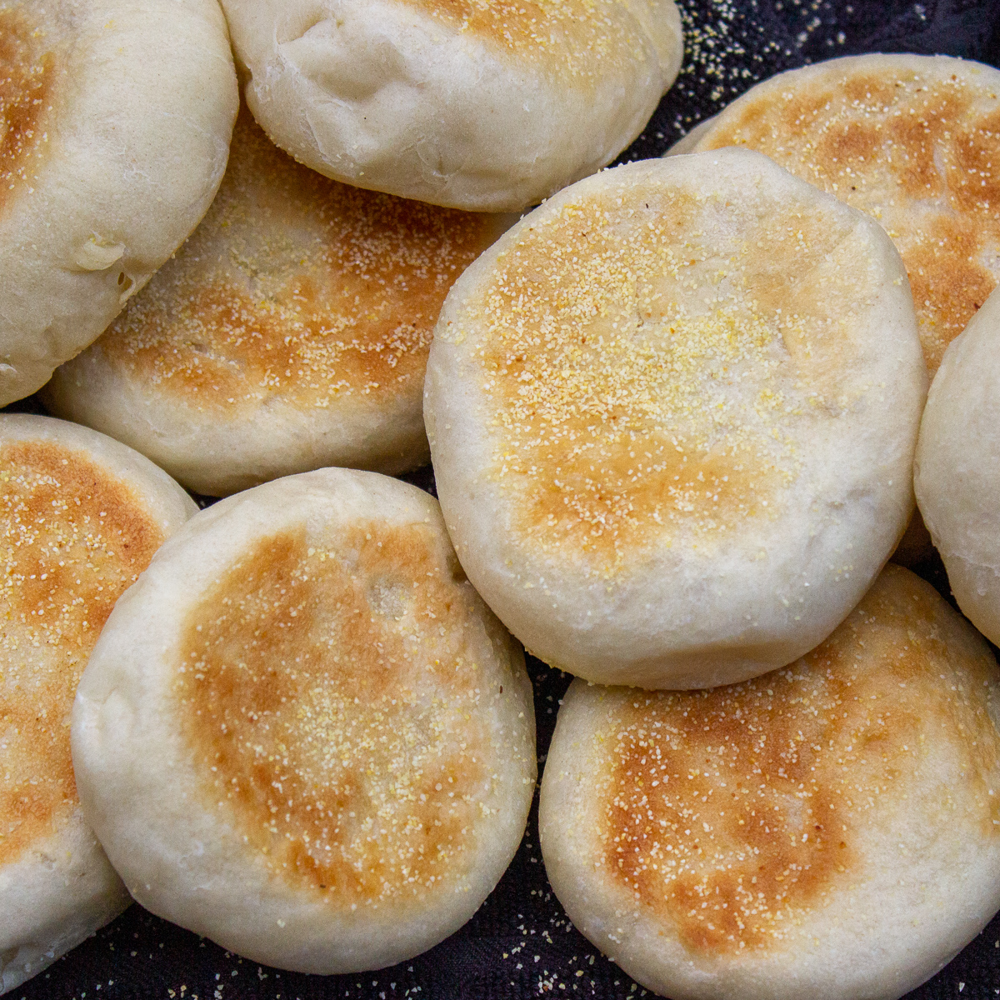

English Muffin
 Description
Do you love bread? If yes then look no further that the english muffin. They are easy to make and great even better to taste! Today im going to show you how to make your own batch of english muffins.
Ingredients
- yeast
- flour
- corn meal
- oil
- sugar
- water
- salt
Steps
- sift sugar and yeast together
- Mix in oil salt and flour
- transfer to bowl and let rise for 1 hour
- divide into pieces and flatten to 3/4 thick disks
- put on pan and cover in corn meal
- cook in low heat pan for 6 min on each side until golden brown
- let cool and enjoy